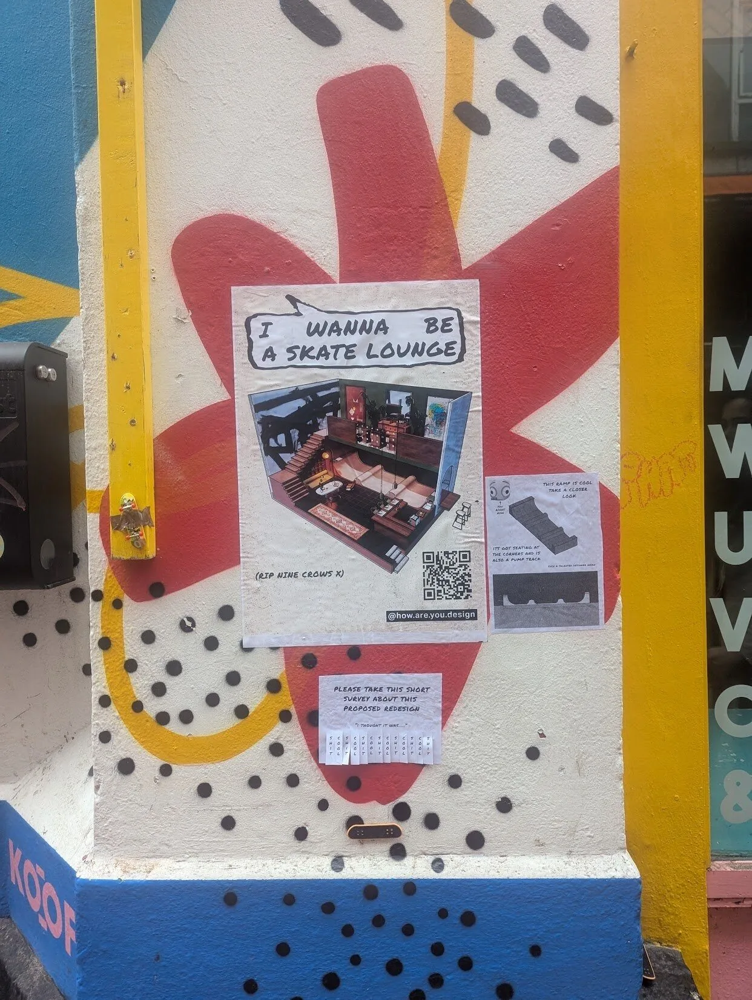
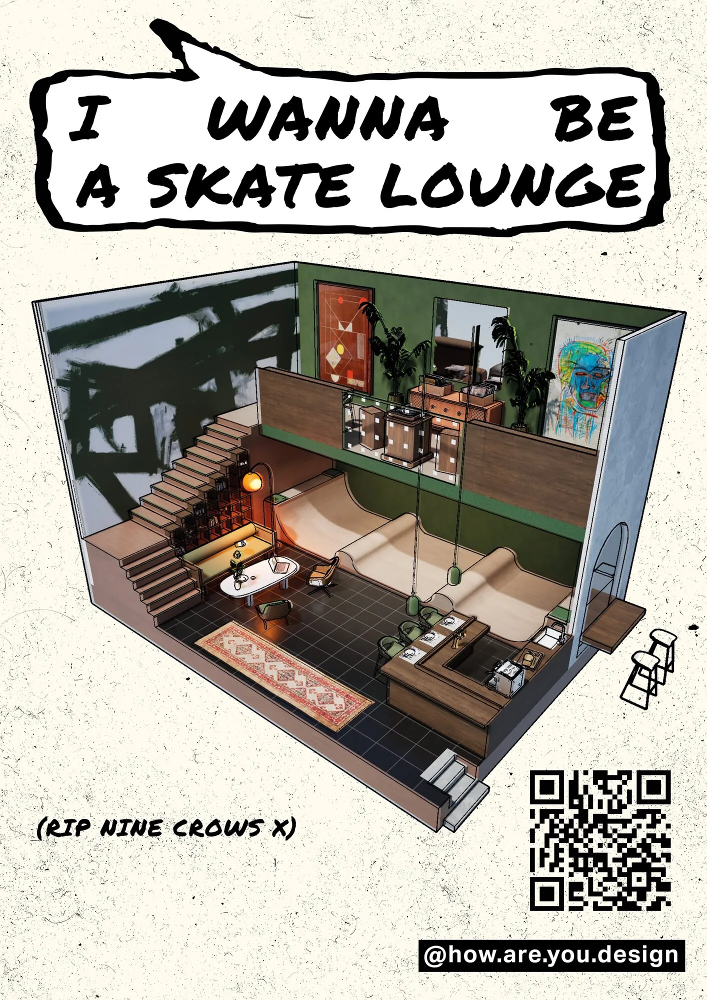
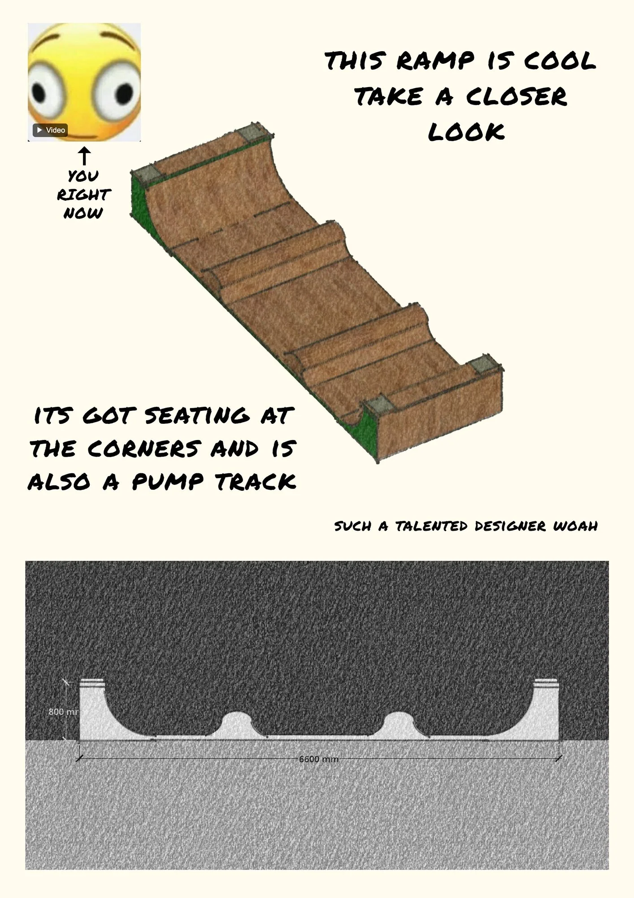
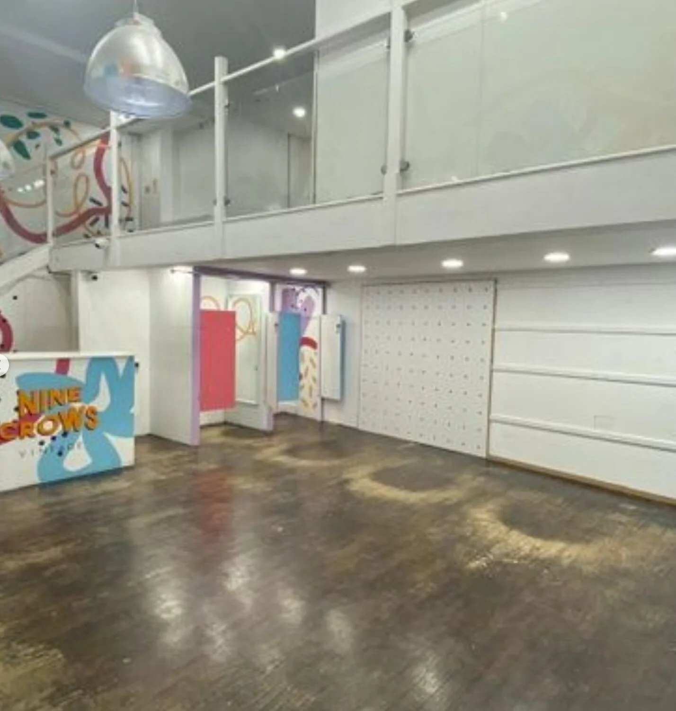
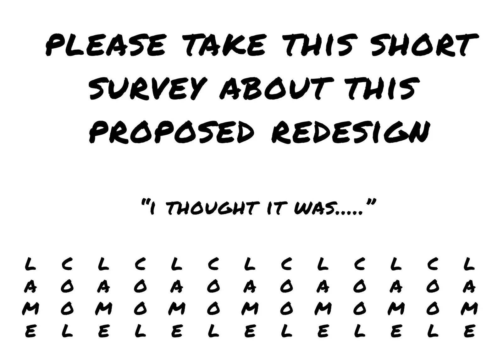

Skate Lounge
A guerrilla proposal for what should fill the gap a unique shop left behind.
Research + proposal
The question
What could take the place of a vacant shop on a Cork street?
My contribution
A spatial proposal, street posters and a playful tear-off survey.
The output
A public invitation to respond to an alternative use for the unit. The interior remains a proposal.
Nine Crows was a vintage shop on one of Cork's most characterful streets, and when it closed, the unit sat empty. Too many small, soulful businesses are disappearing from the city at the moment, replaced by whatever's quickest to fit into a unit: a phone shop, a vape shop, somewhere with no real relationship to the place it's in. Skate Lounge is a proposal for what could go there instead.
The design combines a small indoor ramp and pump track with proper seating built into it, a record player, a bar, vintage furniture and local art on the walls. It's not meant to be just a skatepark or just a café, but both at once: somewhere that gives skaters a reason to be inside, and gives the street a reason to spill into it. Skateboarding's a good sign of a healthy city to begin with, it's culture, exercise, and a way of using bits of a city that would otherwise sit unused. A lounge built around that felt like the right fit for a street that's already full of character.
- Location
- Cork, Ireland
- Year
- 2026
- Type
- Self-initiated
public intervention - Format
- Street poster
campaign · survey




Rather than pitch this to anyone, I put it up on the street as a poster campaign: a rendered cutaway of the space, a closer look at the ramp itself, and a tear-off survey where passersby could vote whether they thought the idea was cool or lame, alongside a QR code to a short online survey. Whether this exact version ever gets built matters less than the question behind it: when somewhere with real character disappears, what do we expect to replace it with?
Skating and lounging usually cancel each other out
Problem: a ramp on its own is dead space for anyone who isn't skating. Approach: built bench seating directly into the corners of the ramp structure. Result: the same footprint works for skaters and for people who just want to sit and listen to a record.
A single ramp only suits one kind of rider
Problem: a straight ramp narrows who can actually use the space and for how long they stay interested. Approach: shaped it as a pump track with rolling bumps rather than one simple ramp. Result: it works for skating, scooting, and rolling at low speed too, not just confident skaters.
Nobody stops for an anonymous proposal stuck to a wall
Problem: unsolicited ideas posted in public usually get ignored. Approach: designed the posters around a comic-style speech bubble headline and a tear-off vote (cool or lame) instead of a dense info board. Result: people can react in seconds without needing to track down who made it or why.
No way to register what people actually want
Problem: an empty unit can become anything, with nothing capturing public appetite before it does. Approach: ran an informal street survey, the tear-off tabs plus a QR code through to a short online form, to gather reactions on the spot. Result: a quick, low-cost read on public appetite, rather than relying on personal opinion alone.
Have a place, programme or experience to improve?
Explore design consultancy